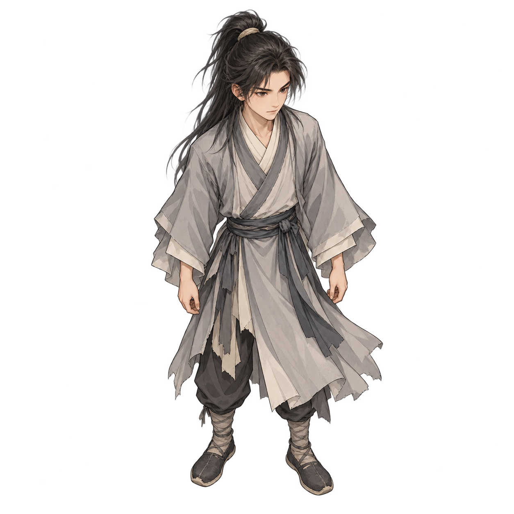
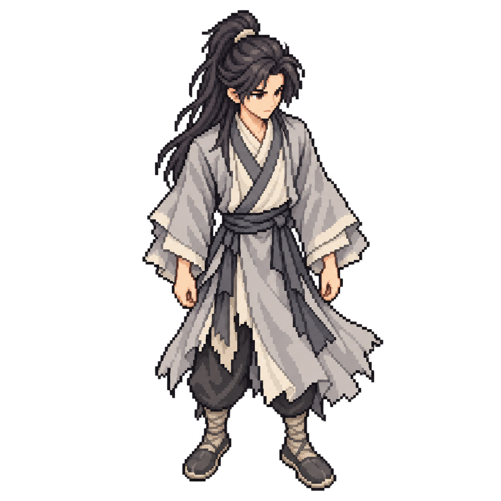

Vương Lâm · Hai mẫu sprite thử
Nền map cũ đã xóa; dùng editor cho map mới · Có cỡ 80/96/112 px để kiểm tra khi ghép cảnh.
Cùng giai đoạn áo xám, tóc buộc nửa đầu và một tư thế đứng ở góc nhìn từ trên chéo xuống. Bản pixel lấy bản nét mịn làm tham chiếu để giữ nhận diện và tư thế.
Sau so sánh, ưu tiên pixel art cho nhân vật và giữ nền stylized 2D. Hai PNG có nền trong suốt, là mẫu đứng tĩnh; kích thước native/lưới pixel và animation cần duyệt trước sản xuất.
Nhận diện Vương Lâm v2 đã duyệt theo hồ sơ tiểu thuyết. Đã có bộ đứng/đi native 64 × 96. Hai hình v1 ở đây giữ làm thử phong cách.
Cỡ khung ảnh:
Nền xem:
Khung ảnh 384 px; nền giấy sáng. Hai ảnh giữ cùng kích thước canvas khi hiển thị.
Stylized 2D · Nét mịn


2D · Pixel art
